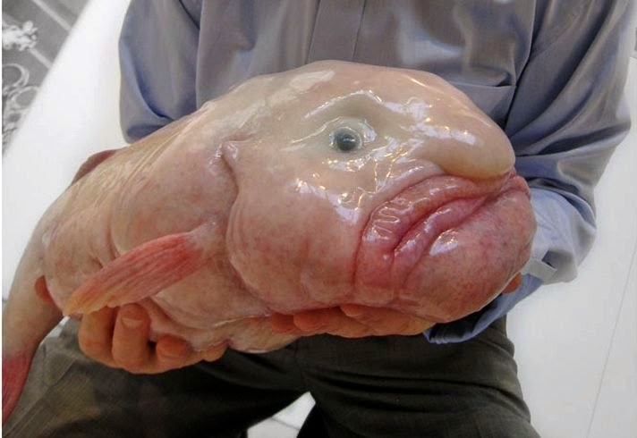
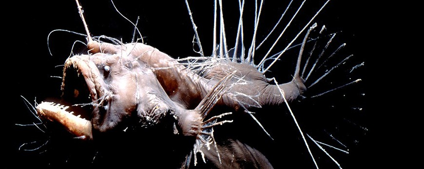
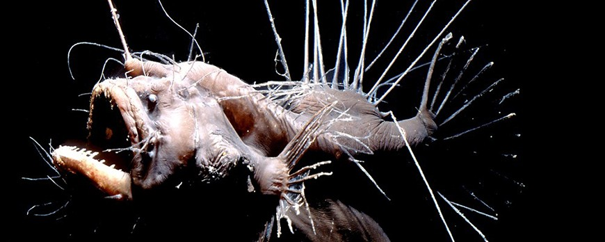
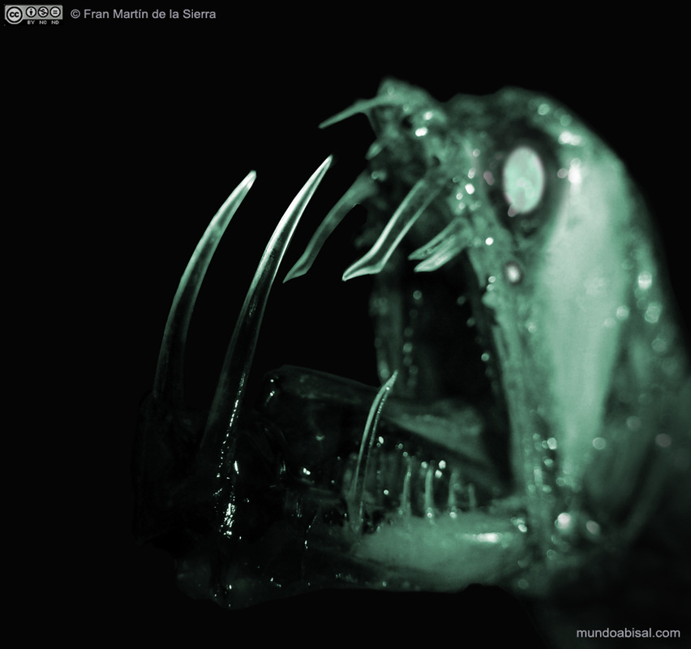
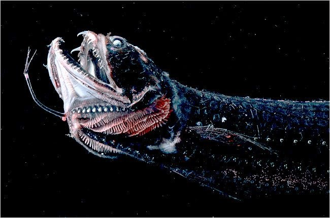

| Especie |
Nombre Cientifico |
Caracteristicas |
Imagen |
video |
| El pez gota |
Psychrolutes marcidus |
- carne gelatinosa
- carente de músculos y huesosle permite sobrevivir y moverse bajo la presión de entre 600 y 1200 metros
bajo la superficie del océano |

| fgdhjj |
| Pejesapo espinoso |
Caulophryne jordani |
- permanece invariablemente entre los 700 y los 3000 metros de profundidad
tamaño no supera los 25 cm
boca grande, que le permite capturar presas de mayor tamaño y aprovechar así el poco alimento con el que se topa
cuerpo achaparrado y un metabolismo lento
filamentos que le recubren son órganos altamente sensibles, capaces de detectar la mínima vibración a su alrededor
  
|
|
| Pez víbora |
Chauliodus sloani |
- Recibe su nombre de los patrones de la luz y oscuridad de color grissu cuerpo
- habitan profundidades de hasta 4400 metros
- alcanzan un tamaño de 25 cm
- enormes dientes que no le caben en la boca y deben llevar fuera, a la altura de los ojos
|

|
| Pez dragón |
Stomias boa |
- posee una capacidad de abrir las mandíbulas comparable al de las serpientes
- alcanzan un tamaño de 32 cm
- habitan profundidades de hasta 1500 metros.
|

|
| Cerato abisal blanco |
Haplophryne mollis |
- Los machos son en este caso de 15 a 30 veces menores que la hembra
- El apéndice de la cabeza es un órgano bioluminiscente para atraer presas.
|

|